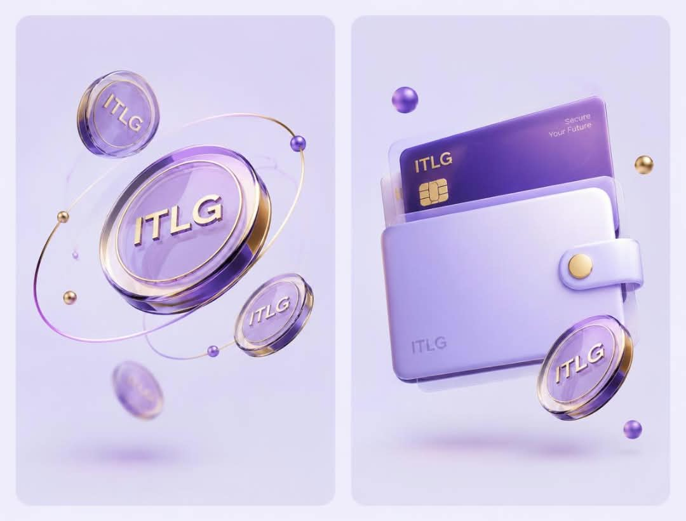

Pioneer 2 Pioneer
Marketplace.
Activating P2P Marketplace on your Interlink wallet allows you to securely trade your Interlink assets with other pioneers, using Interlink Network Escrow services, this is only available to pioneers who have completed KYC and migrated all assets to the Mainnet.

Why interlink
Built for people who actually use it
InterLink is a blockchain ecosystem that aims to connect your digital identity with your crypto wallet. It verifies that you're a real, unique human, making it harder for bots and fake accounts to exploit the system. The goal is to create a trusted digital network where verified people can earn, hold, send, and use digital assets like ITLG.
Verified by design
Every account passes identity checks before it can transact, keeping the network free of anonymous bad actors.
Fully recoverable
Lost access to a device? Recover your wallet through a secure, guided process instead of losing your funds for good.

Adaptive settlement
Validator resources reallocate in real time as demand shifts, so fees stay predictable even during peak activity.
How it works
Up and running in minutes
No technical background needed — most people are sending their first transaction within ten minutes.
Create a wallet
Sign up and generate a secure wallet in seconds, with your recovery details handled for you.
Complete KYC
Verify your identity once so you can trade safely with other pioneers.
Fund your account
Add funds from a bank transfer, card, or an existing wallet, however works best for you.
Start transacting
Send, receive, or stake right away, with fees you can see and predict before you confirm.
What people say
Trusted by early users
A few words from people who moved their first transaction through INTERLINK.
"Setup took less time than making coffee. I was sending my first transfer before I'd even read the whole onboarding page."
"The fees actually stayed the same during a busy week, which is more than I can say for anything else I've used."
"I recovered my wallet after switching phones without losing a cent or waiting on hold with support."
Access the P2P Marketplace
To login securely, kindly follow the button below